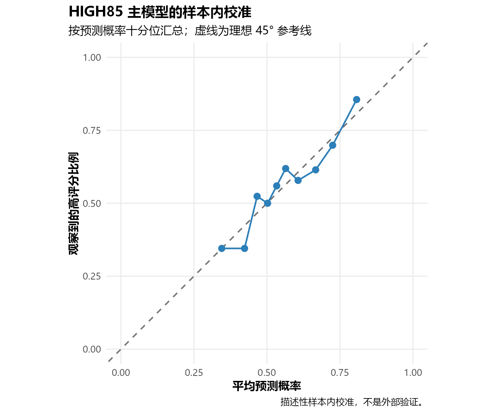
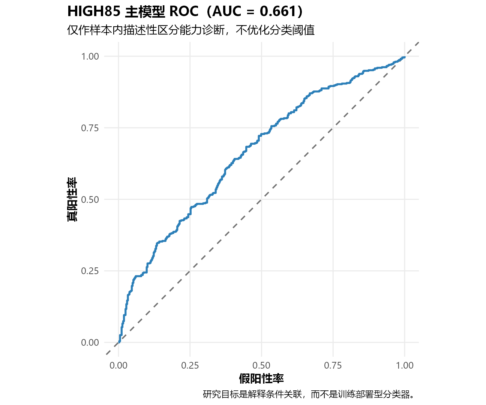
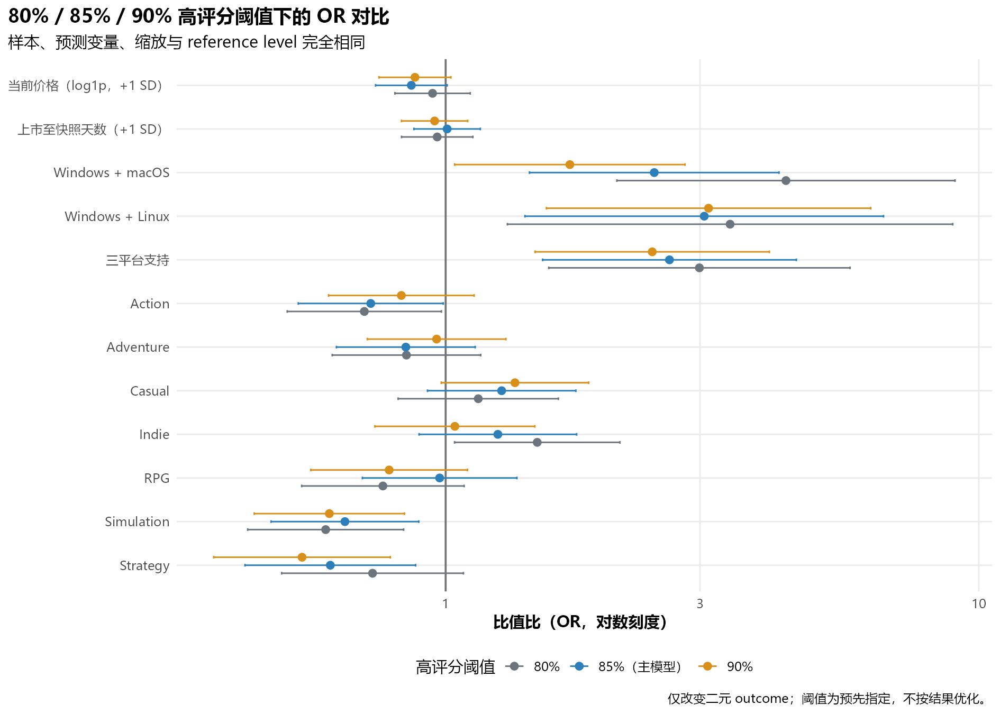
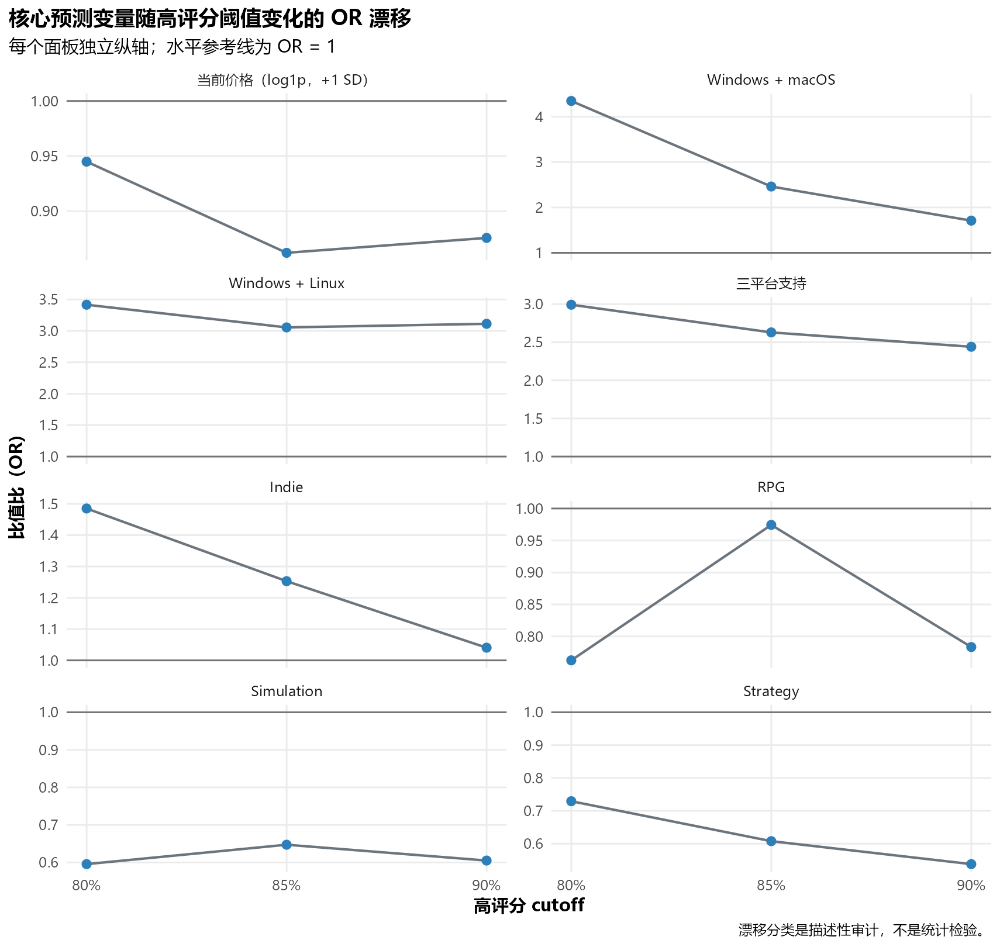
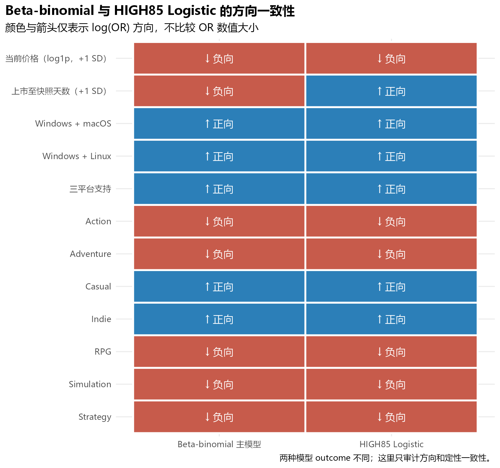

| 模型 | 评分阈值 | 总 N | 高评分 N | 高评分比例（%） | 非高评分 N | 非高评分比例（%） | 精确落在边界 N |
|---|---|---|---|---|---|---|---|
| HIGH80 | 0.80 | 836 | 574 | 68.66 | 262 | 31.34 | 5 |
| HIGH85 | 0.85 | 836 | 471 | 56.34 | 365 | 43.66 | 1 |
| HIGH90 | 0.90 | 836 | 359 | 42.94 | 477 | 57.06 | 7 |
Step 5E 高评分 Logistic 可视化审计
次要、游戏层级、业务可读的高评分门槛关联分析
1 Step 5E 分析目的
Step 5E 回答的是：哪些游戏特征与“达到较高 Steam 正面评价水平”相关。它是次要、业务可读的游戏层级分析，不替代 Step 5C/5D 的 Beta-binomial 主推断。
2 为什么需要 Secondary High-Rating Analysis
Beta-binomial 直接建模每款游戏的正面/负面评论计数，并处理游戏之间的额外异质性。这里的 Logistic 模型则让每个游戏只贡献一个二元 outcome：20 条评论与 100,000 条评论的游戏，在 likelihood 中都是一个 observation。
因此，本分析用于审计“达到门槛”的条件关联，而不是更准确地替代 Beta-binomial，也不使用评论数量作为权重或协变量。
3 样本与 Outcome 定义
Primary sample 固定为 model20_paid 的完整建模样本：836 个付费游戏，均有至少 20 条评论且 AppID 唯一。高评分严格由 positive_reviews / total_reviews >= cutoff 定义，不使用 Steam 的 review-score category。
85% 是预先指定的业务可读阈值，不是自然科学分界点；80% 与 90% 仅作为预先指定的敏感性分析。
4 80/85/90 Rating Threshold 分布
三个模型使用相同的 836 个游戏、相同预测变量、相同缩放参数和相同 reference level；只改变二元 outcome。
5 HIGH85 主 Logistic 模型
| N | 事件 N | 非事件 N | 参数数 | 残差自由度 | logLik | AIC | BIC | Null deviance | Residual deviance | 收敛 | 警告数 |
|---|---|---|---|---|---|---|---|---|---|---|---|
| 836 | 471 | 365 | 13 | 823 | -540.2353 | 1106.4705 | 1167.9427 | 1145.4656 | 1080.4705 | TRUE | 0 |
主模型收敛状态为 TRUE，profile likelihood CI 状态为 PASS。解释顺序依次为方向、OR 幅度、95% 置信区间、rating-threshold 稳健性，最后才是 p 值；不使用显著性星号。
6 参数与 OR
| 预测变量 | log odds | 标准误 | z 值 | p 值 | OR | 95% CI 下限 | 95% CI 上限 |
|---|---|---|---|---|---|---|---|
| 截距 | 0.2516 | 0.1939 | 1.2975 | 0.1945 | 1.2861 | 0.8794 | 1.8809 |
| 当前价格（log1p，+1 SD） | -0.1482 | 0.0789 | -1.8792 | 0.0602 | 0.8623 | 0.7388 | 1.0064 |
| 上市至快照天数（+1 SD） | 0.0063 | 0.0731 | 0.0867 | 0.9309 | 1.0064 | 0.8720 | 1.1615 |
| Windows + macOS | 0.9010 | 0.2749 | 3.2768 | 0.0010 | 2.4619 | 1.4363 | 4.2200 |
| Windows + Linux | 1.1169 | 0.3951 | 2.8271 | 0.0047 | 3.0554 | 1.4086 | 6.6277 |
| 三平台支持 | 0.9667 | 0.2796 | 3.4573 | 0.0005 | 2.6292 | 1.5199 | 4.5481 |
| Action | -0.3235 | 0.1597 | -2.0262 | 0.0427 | 0.7236 | 0.5291 | 0.9895 |
| Adventure | -0.1721 | 0.1529 | -1.1255 | 0.2604 | 0.8419 | 0.6239 | 1.1361 |
| Casual | 0.2419 | 0.1634 | 1.4801 | 0.1389 | 1.2737 | 0.9246 | 1.7545 |
| Indie | 0.2255 | 0.1736 | 1.2992 | 0.1939 | 1.2530 | 0.8916 | 1.7607 |
| RPG | -0.0260 | 0.1703 | -0.1527 | 0.8786 | 0.9743 | 0.6979 | 1.3603 |
| Simulation | -0.4351 | 0.1627 | -2.6743 | 0.0075 | 0.6472 | 0.4705 | 0.8903 |
| Strategy | -0.4982 | 0.1880 | -2.6497 | 0.0081 | 0.6076 | 0.4204 | 0.8784 |

注记人工审计重点
- Price、Simulation、Strategy 是否低于 OR = 1？
- Platforms 与 Indie 是否总体高于 OR = 1？
- RPG 的方向与区间是否支持“偏负”的谨慎表述？
- 哪些 95% 置信区间跨越 OR = 1？
7 模型诊断
| 检查 | 标记数 | 说明 |
|---|---|---|
| glm_not_converged | 0 | converged = TRUE |
| rank_deficient_model_matrix | 0 | rank = 13 of 13 |
| absolute_coefficient_gt_10_or_se_gt_10 | 0 | none |
| fitted_probability_below_1e_6 | 0 | Heuristic for complete or quasi-separation |
| fitted_probability_above_1_minus_1e_6 | 0 | Heuristic for complete or quasi-separation |
| platform_or_genre_zero_event_cell | 0 | Categorical outcome cross-tab audit |
| platform_or_genre_zero_non_event_cell | 0 | Categorical outcome cross-tab audit |
| glm_warning | 0 | warning count = 0 |
| N | 参数数 | 最大绝对标准化偏差残差 | |残差| > 2 N | |残差| > 3 N | 最大 leverage | 2p/n | leverage > 2p/n N | 3p/n | leverage > 3p/n N | 最大 Cook’s D | 4/n | Cook’s D > 4/n N | Cook’s D > 0.5 N | Cook’s D > 1 N |
|---|---|---|---|---|---|---|---|---|---|---|---|---|---|---|
| 836 | 13 | 2.14741 | 2 | 0 | 0.04843 | 0.0311 | 33 | 0.04665 | 1 | 0.01291 | 0.00478 | 25 | 0 | 0 |
| 预测变量 | 水平 | N | 高评分 N | 高评分比例（%） | 非高评分 N | 非高评分比例（%） |
|---|---|---|---|---|---|---|
| platform_segment | Windows + Linux | 40 | 31 | 77.50 | 9 | 22.50 |
| platform_segment | Windows + macOS | 78 | 56 | 71.79 | 22 | 28.21 |
| platform_segment | Windows + macOS + Linux | 75 | 55 | 73.33 | 20 | 26.67 |
| platform_segment | Windows only | 643 | 329 | 51.17 | 314 | 48.83 |
| genre_action | absent | 517 | 309 | 59.77 | 208 | 40.23 |
| genre_action | present | 319 | 162 | 50.78 | 157 | 49.22 |
| genre_adventure | absent | 431 | 252 | 58.47 | 179 | 41.53 |
| genre_adventure | present | 405 | 219 | 54.07 | 186 | 45.93 |
| genre_casual | absent | 512 | 267 | 52.15 | 245 | 47.85 |
| genre_casual | present | 324 | 204 | 62.96 | 120 | 37.04 |
| genre_indie | absent | 222 | 108 | 48.65 | 114 | 51.35 |
| genre_indie | present | 614 | 363 | 59.12 | 251 | 40.88 |
| genre_rpg | absent | 629 | 359 | 57.07 | 270 | 42.93 |
| genre_rpg | present | 207 | 112 | 54.11 | 95 | 45.89 |
| genre_simulation | absent | 581 | 341 | 58.69 | 240 | 41.31 |
| genre_simulation | present | 255 | 130 | 50.98 | 125 | 49.02 |
| genre_strategy | absent | 658 | 382 | 58.05 | 276 | 41.95 |
| genre_strategy | present | 178 | 89 | 50.00 | 89 | 50.00 |
| AppID | 游戏 | 正面率 | 总评论 | HIGH85 | 预测概率 | 标准化残差 | Leverage | Cook’s D | 价格 | 平台 | Genres |
|---|
上述诊断用于识别稀疏 outcome cell、极端拟合概率、较大系数/标准误以及可能具有较强影响的游戏；它们不是自动删点规则。
8 Calibration 与 AUC
| 十分位 | N | 平均预测概率 | 观察高评分比例 | 绝对差 |
|---|---|---|---|---|
| 1 | 84 | 0.3453 | 0.3452 | 0.0000 |
| 2 | 84 | 0.4234 | 0.3452 | 0.0782 |
| 3 | 84 | 0.4664 | 0.5238 | 0.0574 |
| 4 | 84 | 0.5023 | 0.5000 | 0.0023 |
| 5 | 84 | 0.5334 | 0.5595 | 0.0261 |
| 6 | 84 | 0.5641 | 0.6190 | 0.0550 |
| 7 | 83 | 0.6066 | 0.5783 | 0.0283 |
| 8 | 83 | 0.6668 | 0.6145 | 0.0523 |
| 9 | 83 | 0.7251 | 0.6988 | 0.0263 |
| 10 | 83 | 0.8072 | 0.8554 | 0.0483 |
| auc | standard_error | ci95_lower | ci95_upper | ci_method | diagnostic_scope |
|---|---|---|---|---|---|
| 0.6605 | 0.0187 | 0.6238 | 0.6973 | DeLong placement-value normal approximation | In-sample descriptive discrimination; no classification threshold optimization |

注记人工审计重点
- 各十分位的预测概率与观察比例是否系统性偏离？
- 是否只有少数十分位出现明显绝对差？
- 本图是 in-sample descriptive calibration，不是 external validation。

注记人工审计重点
- AUC 只描述样本内区分能力，不用于选择或优化分类 threshold。
- 本研究目标主要是解释关联，而不是训练部署型分类器。
9 Rating Threshold 敏感性
| 模型 | 评分阈值 | N | 事件 N | 事件比例 | 收敛 | 警告数 | logLik | AIC | BIC |
|---|---|---|---|---|---|---|---|---|---|
| HIGH80 | 0.80 | 836 | 574 | 0.6866 | TRUE | 0 | -485.5886 | 997.1773 | 1058.649 |
| HIGH85 | 0.85 | 836 | 471 | 0.5634 | TRUE | 0 | -540.2353 | 1106.4705 | 1167.943 |
| HIGH90 | 0.90 | 836 | 359 | 0.4294 | TRUE | 0 | -540.9565 | 1107.9130 | 1169.385 |
| 预测变量 | OR 80 | CI80 下限 | CI80 上限 | OR 85 | CI85 下限 | CI85 上限 | OR 90 | CI90 下限 | CI90 上限 | 方向一致 | 相对 HIGH85 最大漂移 | 稳健性分类 |
|---|---|---|---|---|---|---|---|---|---|---|---|---|
| 当前价格（log1p，+1 SD） | 0.9450 | 0.8031 | 1.1119 | 0.8623 | 0.7388 | 1.0064 | 0.8758 | 0.7498 | 1.0230 | TRUE | 0.0959 | ROBUST |
| 上市至快照天数（+1 SD） | 0.9642 | 0.8265 | 1.1248 | 1.0064 | 0.8720 | 1.1615 | 0.9534 | 0.8263 | 1.0999 | FALSE | 0.0527 | SENSITIVE |
| Windows + macOS | 4.3484 | 2.0948 | 9.0261 | 2.4619 | 1.4363 | 4.2200 | 1.7097 | 1.0397 | 2.8117 | TRUE | 0.7662 | SENSITIVE |
| Windows + Linux | 3.4162 | 1.3057 | 8.9381 | 3.0554 | 1.4086 | 6.6277 | 3.1125 | 1.5453 | 6.2692 | TRUE | 0.1181 | PARTIAL |
| 三平台支持 | 2.9922 | 1.5610 | 5.7357 | 2.6292 | 1.5199 | 4.5481 | 2.4408 | 1.4716 | 4.0481 | TRUE | 0.1381 | PARTIAL |
| Action | 0.7038 | 0.5044 | 0.9819 | 0.7236 | 0.5291 | 0.9895 | 0.8259 | 0.6030 | 1.1310 | TRUE | 0.1413 | PARTIAL |
| Adventure | 0.8442 | 0.6126 | 1.1633 | 0.8419 | 0.6239 | 1.1361 | 0.9617 | 0.7130 | 1.2973 | TRUE | 0.1423 | PARTIAL |
| Casual | 1.1513 | 0.8144 | 1.6274 | 1.2737 | 0.9246 | 1.7545 | 1.3489 | 0.9812 | 1.8544 | TRUE | 0.0961 | ROBUST |
| Indie | 1.4852 | 1.0393 | 2.1223 | 1.2530 | 0.8916 | 1.7607 | 1.0405 | 0.7365 | 1.4698 | TRUE | 0.1853 | PARTIAL |
| RPG | 0.7626 | 0.5369 | 1.0832 | 0.9743 | 0.6979 | 1.3603 | 0.7834 | 0.5586 | 1.0988 | TRUE | 0.2173 | PARTIAL |
| Simulation | 0.5955 | 0.4252 | 0.8341 | 0.6472 | 0.4705 | 0.8903 | 0.6051 | 0.4375 | 0.8369 | TRUE | 0.0798 | ROBUST |
| Strategy | 0.7292 | 0.4925 | 1.0797 | 0.6076 | 0.4204 | 0.8784 | 0.5378 | 0.3673 | 0.7875 | TRUE | 0.2001 | PARTIAL |
ROBUST / PARTIAL / SENSITIVE 只是一项描述性审计：以 HIGH85 为基准计算最大相对 OR 漂移，并检查三个阈值方向是否一致；它不是统计检验。

注记人工审计重点
- 是否存在 80/85/90 之间方向反转？
- 是否只有某一个 cutoff 给出异常 OR 或明显扩大的区间？
- 不能根据本图选择“最佳” rating cutoff。

注记人工审计重点
- Price、Simulation、Strategy 的负方向是否持续？
- Platform、Indie 与 RPG 的方向和幅度是否稳定？
- 每个面板纵轴独立，只用于查看同一预测变量跨 cutoff 的漂移。
10 Price 深入审计
| 预测变量 | OR80 | OR85 | OR90 | 方向一致 | 最大相对漂移 | 稳定性 |
|---|---|---|---|---|---|---|
| 当前价格（log1p，+1 SD） | 0.945 | 0.8623 | 0.8758 | TRUE | 9.6% | ROBUST |
| 情景 | 参考概率 | 情景概率 | 变化百分点 |
|---|---|---|---|
| REFERENCE | 0.56258 | 0.56258 | 0.0000 |
| PRICE_PLUS_1SD | 0.56258 | 0.52584 | -3.6742 |
这里的百分点变化是 model-based predicted probability contrast，不是因果 marginal effect。
11 Simulation 深入审计
| 预测变量 | OR80 | OR85 | OR90 | 方向一致 | 最大相对漂移 | 稳定性 |
|---|---|---|---|---|---|---|
| Simulation | 0.5955 | 0.6472 | 0.6051 | TRUE | 8.0% | ROBUST |
| 情景 | 参考概率 | 情景概率 | 变化百分点 |
|---|---|---|---|
| REFERENCE | 0.56258 | 0.56258 | 0.00000 |
| GENRE_SIMULATION | 0.56258 | 0.45425 | -10.83245 |
12 Platform 深入审计
| 预测变量 | OR80 | OR85 | OR90 | 方向一致 | 最大相对漂移 | 稳定性 |
|---|---|---|---|---|---|---|
| Windows + macOS | 4.3484 | 2.4619 | 1.7097 | TRUE | 76.6% | SENSITIVE |
| Windows + Linux | 3.4162 | 3.0554 | 3.1125 | TRUE | 11.8% | PARTIAL |
| 三平台支持 | 2.9922 | 2.6292 | 2.4408 | TRUE | 13.8% | PARTIAL |
| 情景 | 参考概率 | 情景概率 | 变化百分点 |
|---|---|---|---|
| REFERENCE | 0.56258 | 0.56258 | 0.00000 |
| PLATFORM_WINDOWS_MACOS | 0.56258 | 0.75998 | 19.74044 |
| PLATFORM_WINDOWS_LINUX | 0.56258 | 0.79715 | 23.45682 |
| PLATFORM_ALL_THREE | 0.56258 | 0.77177 | 20.91898 |
13 Beta-binomial 与 High-Rating Logistic 方向对比
| 预测变量 | Beta OR | Beta 方向 | HIGH85 OR | HIGH85 方向 | 方向一致 |
|---|---|---|---|---|---|
| 当前价格（log1p，+1 SD） | 0.9296 | NEGATIVE | 0.8623 | NEGATIVE | TRUE |
| 上市至快照天数（+1 SD） | 0.9827 | NEGATIVE | 1.0064 | POSITIVE | FALSE |
| Windows + macOS | 1.4427 | POSITIVE | 2.4619 | POSITIVE | TRUE |
| Windows + Linux | 1.6315 | POSITIVE | 3.0554 | POSITIVE | TRUE |
| 三平台支持 | 1.5192 | POSITIVE | 2.6292 | POSITIVE | TRUE |
| Action | 0.8828 | NEGATIVE | 0.7236 | NEGATIVE | TRUE |
| Adventure | 0.9923 | NEGATIVE | 0.8419 | NEGATIVE | TRUE |
| Casual | 1.1065 | POSITIVE | 1.2737 | POSITIVE | TRUE |
| Indie | 1.1446 | POSITIVE | 1.2530 | POSITIVE | TRUE |
| RPG | 0.9165 | NEGATIVE | 0.9743 | NEGATIVE | TRUE |
| Simulation | 0.7859 | NEGATIVE | 0.6472 | NEGATIVE | TRUE |
| Strategy | 0.8257 | NEGATIVE | 0.6076 | NEGATIVE | TRUE |
两种 OR 对应不同 outcome，不应直接比较数值大小。这里只比较方向和定性一致性：Beta-binomial 解释正面评论相对负面评论的 odds，HIGH85 Logistic 解释游戏达到 85% 门槛的 odds。

注记人工审计重点
- 是否存在 Logistic 与 Beta-binomial 的方向冲突？
- 冲突只说明 outcome 定义下的定性结果不同，不表示某个模型自动“更正确”。
- 不得把两种模型的 OR 数值当作同尺度 effect size。
14 人工审计清单
- 确认所有三个 rating cutoff 使用相同 AppID、相同 N、相同冻结缩放与 reference level。
- 确认 HIGH85 精确使用
>= 0.85，边界游戏计入高评分。 - 确认模型没有 sample weights，也没有评论数量协变量。
- 审查 platform 与 genre 是否存在 zero-event 或 zero-non-event cell。
- 审查拟合警告、极端概率、大系数/标准误、leverage、Cook’s D 与残差。
- 确认所有解释使用“相关”“条件关联”，不作因果陈述。
| stage | status | warning_text |
|---|---|---|
| HIGH80 glm fit | NO WARNING | NA |
| HIGH85 glm fit | NO WARNING | NA |
| HIGH90 glm fit | NO WARNING | NA |
| HIGH85 profile likelihood CI | NO WARNING | NA |
15 阶段性结论
Step 5E 提供的是次要、游戏层级的高评分门槛分析。它让每款游戏获得相同 likelihood 权重，适合回答“哪些特征与达到门槛相关”，但不能替代利用正面/负面评论计数和 denominator information 的 Beta-binomial 主模型。80/85/90 敏感性用于判断结论是否依赖任一预设阈值，而不是寻找最有利的 cutoff。